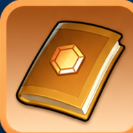
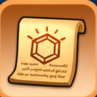

Губернатор
Снаряжение и талисманы как долгосрочная прокачка всего аккаунта.
Содержание
Губернатор
Снаряжение и талисманы губернатора дают постоянные боевые характеристики войскам.
Они относятся ко всему аккаунту и не привязаны к одному конкретному герою. Эти бонусы учитываются во многих боевых режимах вместе с героями, технологиями, питомцами и другими системами развития.
Отдельная система развития всего аккаунта.
Экипировка отдельных героев.
Когда открывается
Топка 22
Топка 25
Поэтому материалы для этих систем стоит начинать копить заранее, даже если сама функция ещё не открыта.
Снаряжение губернатора
Комплект состоит из 6 предметов.
Каждому типу войск соответствуют два предмета:
2 предмета
2 предмета
2 предмета
Каждый предмет повышает атаку и защиту соответствующего типа войск.
Комплектные бонусы
Это одна из самых важных механик системы.
Дополнительный бонус защиты войск.
Дополнительный бонус атаки войск.
Поэтому не всегда выгодно уводить один предмет слишком далеко вперёд, пока остальные остаются далеко позади.
Комплект → приоритетные предметы → снова выравнивание комплекта.
Сначала стараемся сохранить хороший общий уровень комплекта. После получения комплектного бонуса можно сильнее вкладываться в приоритетные предметы, а затем снова подтягивать отстающие.
Материалы снаряжения губернатора
Для развития используются:
Один из основных материалов улучшения.
Используется вместе со сплавом на этапах развития.
Требуются начиная с более высоких уровней качества.
Поздний легендарный материал для дальнейшего усиления снаряжения.
Лунный янтарь относится именно к позднему развитию, поэтому его особенно не стоит расходовать без плана.
Легендарное снаряжение
После мифических ступеней становится доступно легендарное снаряжение губернатора.
Его открытие зависит не только от прокачки самого игрока, но и от возраста государства.
Поэтому два игрока с одинаковой Топкой в государствах разного возраста могут иметь доступ к разным поздним этапам системы.
Обмен материалов
На позднем этапе открывается возможность обменивать одни материалы улучшения на другие.
Обмен становится доступен после открытия легендарного снаряжения губернатора и достижения требуемой высокой ступени хотя бы одним мифическим предметом.
Лимит обмена обновляется еженедельно.
Это полезно, когда одного материала накопилось слишком много, а другого постоянно не хватает.
Талисманы губернатора
Талисманы открываются при Топке 25.
У каждого из шести предметов снаряжения есть по 3 талисмана.
Талисманы дают войскам:
В отличие от обычного снаряжения губернатора, которое в основном развивает атаку и защиту.
Материалы талисманов
Для основных уровней используются:

Руководство талисмана
Чертёж талисманаНа более поздних уровнях появляются дополнительные редкие материалы.
Как прокачивать талисманы
Жёсткий универсальный порядок «Пехота → Стрелки → Копейщики» здесь не используем.
Важна для выживаемости передней линии.
Важны для нанесения урона.
Также дают полноценный вклад в бой и не должны оставаться сильно позади.
Если нет специальной боевой стратегии, лучше поддерживать талисманы относительно равномерно, а затем усиливать нужный тип войск под свои задачи.
Общий уровень → приоритет нужного типа → снова подтянуть остальные.
Когда улучшать
Материалы снаряжения и талисманов довольно редкие.
Крупные улучшения удобно совмещать с SvS и другими событиями, где развитие снаряжения или талисманов приносит дополнительные очки.
Снаряжение губернатора: 6 предметов → атака и защита войск → комплектные бонусы.
Талисманы: 18 штук → здоровье и смертоносность.
Топка 22: открывается снаряжение.
Топка 25: открываются талисманы.
Редкие материалы: планируем заранее и по возможности используем во время выгодных событий.